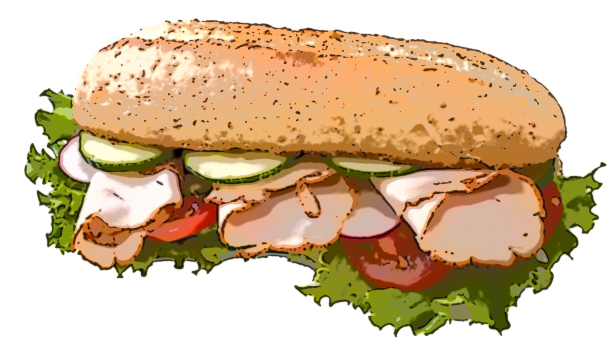

Titre de ma page d'essais des commandes HTML pour l'activité Web n°1
Bonjour, je suis un bon élève
Je peux même écrire plus gros en utilisant la balise h2
Voire beaucoup plus gros en utilisant la balise h1
Voici une photo politiquement correcte, libre de droit (C.C.), de taille moyenne et qui a un fond transparent.

Lien vers le site de Google | Lien vers la page bio | Lien vers la page liste